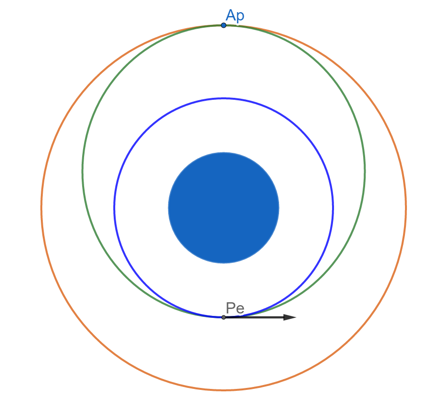
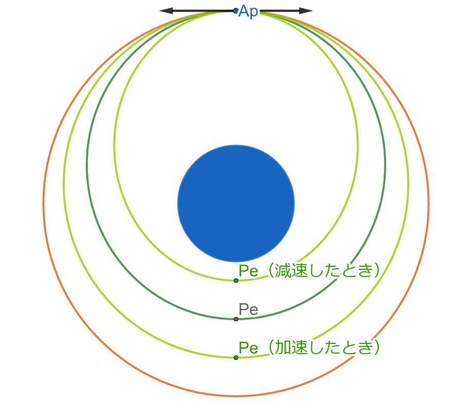
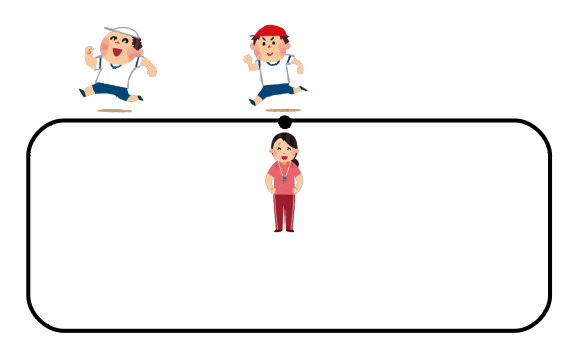
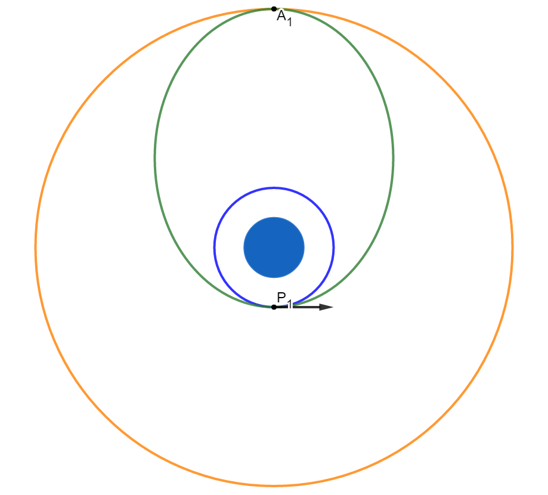
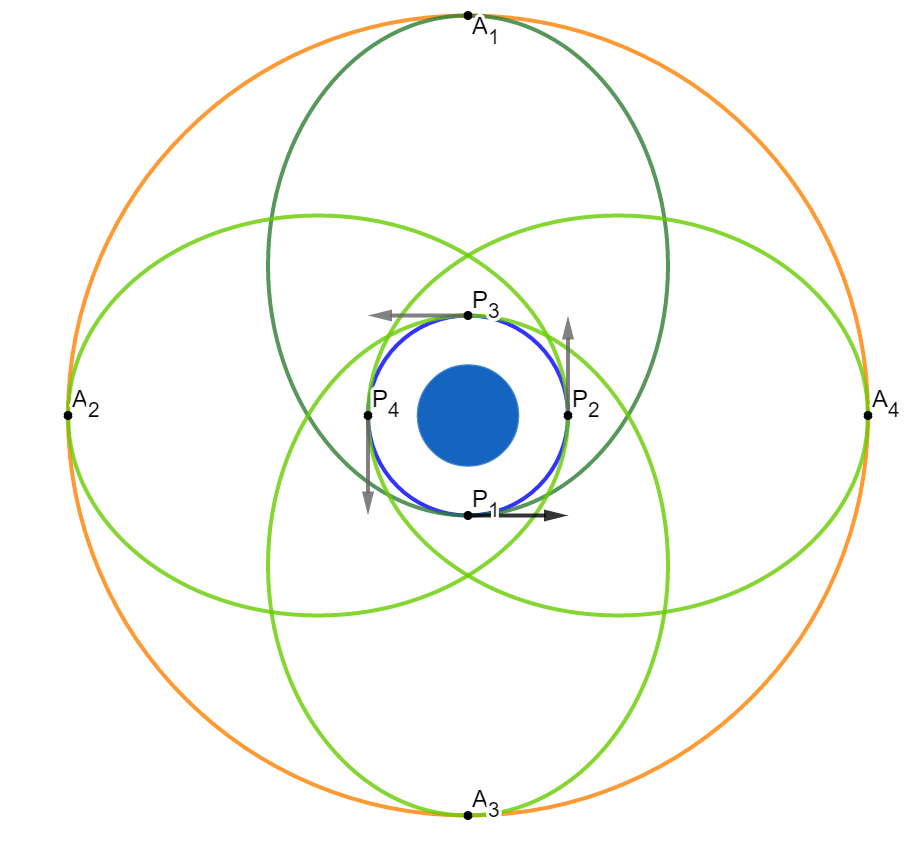
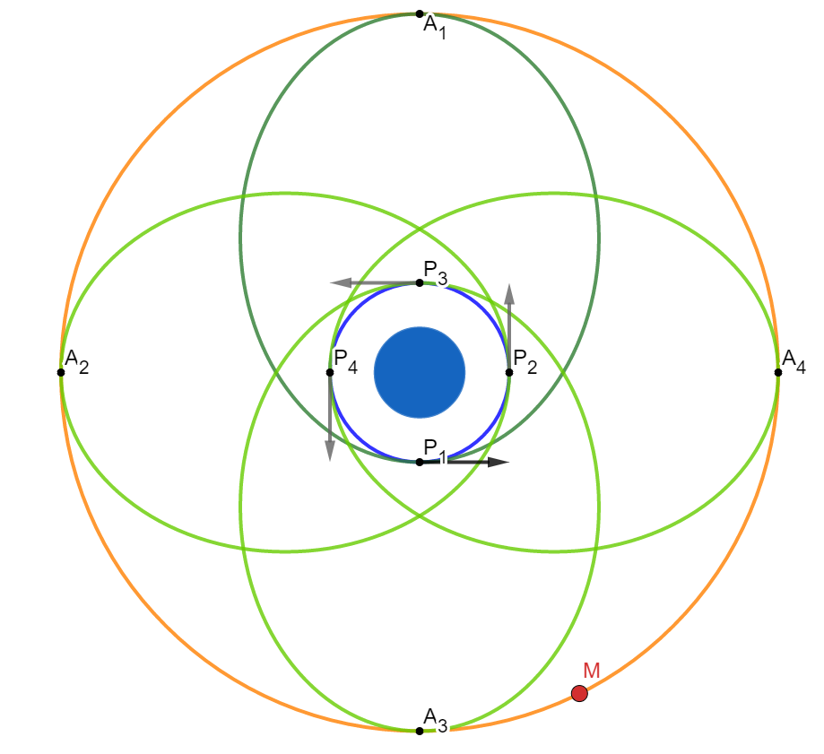
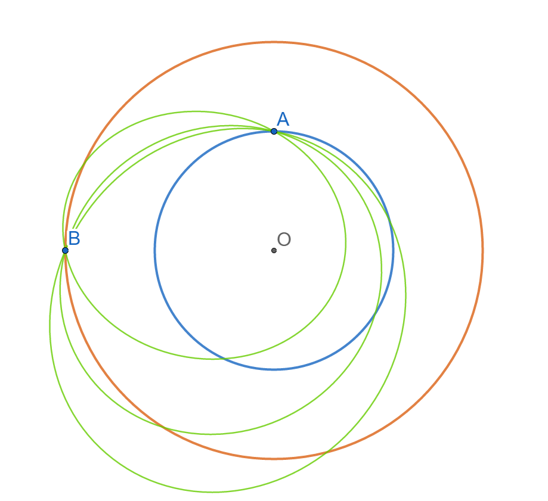
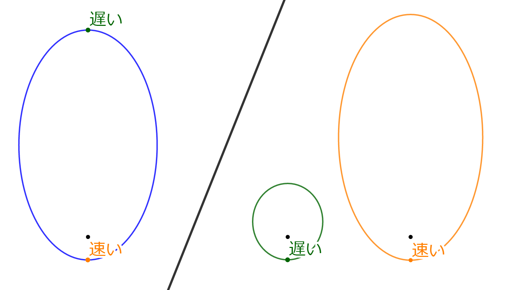
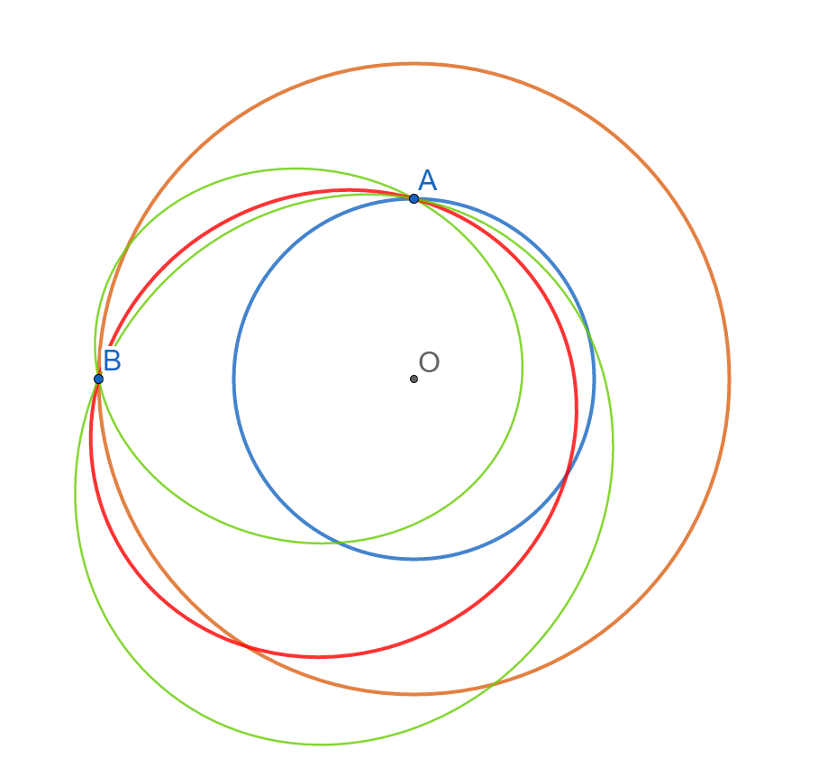

宇宙船と別の宇宙船・宇宙ステーションが、軌道上で会合することをランデブー(Rendezvous)と呼びます。
ランデブーの3つの方法とその原理について解説します。
Sync Orbit MFDでは、軌道周期を変化させることによってランデブーする。
ランデブーの準備として、まず自機の軌道がランデブー相手の軌道と1点で接するようにする。
青が宇宙船の軌道、オレンジが宇宙ステーションの軌道。
加速して緑の軌道にする。

ここでは、低い軌道にいる宇宙船が、高い軌道の宇宙ステーションとランデブーする場合を考える。
相手の軌道より高く飛ぶ必要はないので、遠地点(Ap)※で相手の軌道と接するようにする。
※中心天体（この場合は地球）からもっとも遠い軌道上の点
宇宙ステーションと宇宙船が、Apに同時に到着するようにする。
Apで加速・減速すると、軌道の反対側、つまり近地点(Pe)の高度が上がる・下がる。
近地点高度が上がれば軌道周期（軌道を1周するのに必要な時間）が長くなる。
近地点高度が下がれば軌道周期が短くなる。

軌道周期を変化させることで、タイミングを調整してランデブーさせる。
軌道周期の公式
（楕円軌道のとき）
$$ T = 2 \pi \sqrt{ \frac{a^3}{GM} } \quad [ \mathrm{s} ] $$
軌道速度の公式
（楕円軌道のとき）
$$ V = \sqrt{ GM \left( \frac{2}{r} - \frac{1}{a} \right) } \quad [ \mathrm{m/s} ] $$
| \( T \) | 軌道周期（公転周期） |
| \( a \) | 軌道長半径 (SMa) |
| \( r \) | 軌道半径 (Rad) |
| \( G \) | 万有引力定数 \( 6.674 \times 10^{-11} \, [ \mathrm{m}^{3} \, \mathrm{kg}^{-1} \, \mathrm{s}^{-2} ] \) |
| \( M \) | 中心天体の質量 地球の場合は \( 5.972 \times 10^{24} \, [ \mathrm{kg} ] \) |
この方法は、以下のような単純な算数の問題に例えることができる。

AくんとBくんが運動場でランニングをしている。
Aくんは1分で運動場を1周するペースで走っている。
Aくんが先生の前を通過した10秒後に、Bくんが先生の前にやってきた。
AくんとBくんが同時に先生の前に到着するためには、Bくんは次の1周を何秒で走ればよいか。
この場合は、60-10＝50なので50秒で1周するように走ればよいということになる。
Bくんがそれまで1周40秒のペースで走っていたとしたら、10秒遅く走ることになる。
1周60秒のペースなら、10秒早く走ることになる。
Sync Orbit MFDでのランデブーも同じで、「1周する時間を調整する」ことで宇宙船とステーションが出会うことができる。
宇宙船が軌道上で加速し、軌道を変化させることをマニューバと呼ぶ。
TransXでは、マニューバの時刻と目標までの距離を比較することでランデブー軌道を作成する。
軌道上で加速すると、遠地点高度が上がる。
遠地点がちょうど目標の軌道に接するようにする。
青を宇宙船の軌道、オレンジを月の軌道とする。
P1で加速すると緑の軌道となる。
このときの遠地点をA1とする。

加速を実行する時刻を変更すると、遠地点の位置が変わる。

月の未来位置は計算によって予測できる。
したがって、遠地点の位置と月までの距離を比較することができる。
地球低軌道から月まではおおよそ4日かかることがわかっている。
4日後の月の未来位置をMとすると、P3で加速したときに月に最も接近することになる。

同様にして、例えば宇宙ステーションとランデブーすることもできる。
このような計算を手で繰り返し実行するのは面倒だが、TransXが人間のかわりにやってくれる。
ユーザーはMan. Dateの数字を操作するだけでよい。
IMFDは、出発地点と目標天体の2点を通る楕円軌道を自動で作成することができる。
地球を出発し、火星へと向かう軌道を考える。
出発時刻をT1、到着時刻をT2とする。
T1での地球の位置をA、T2での火星の位置をBとする。
太陽（点O）を焦点の1つとし、A・Bを通る楕円を描いてみる。

「点Oを焦点とし、A・Bを通る楕円」は無数に存在する。
楕円軌道における位置や、楕円軌道の大きさによって、宇宙船の速度は変化する。

したがって、T1からT2までの移動時間を満たす楕円軌道は1つしか存在しないことがわかる。

このように、2点を通り、かつ任意の飛行時間を満たす軌道を決定することをランベルト問題という。
IMFDはこのランベルト問題を扱うことができる。
ユーザーは目標（惑星や宇宙船など）と、TEj（出発時刻）・TIn（到着時刻）を指定するだけでよい。